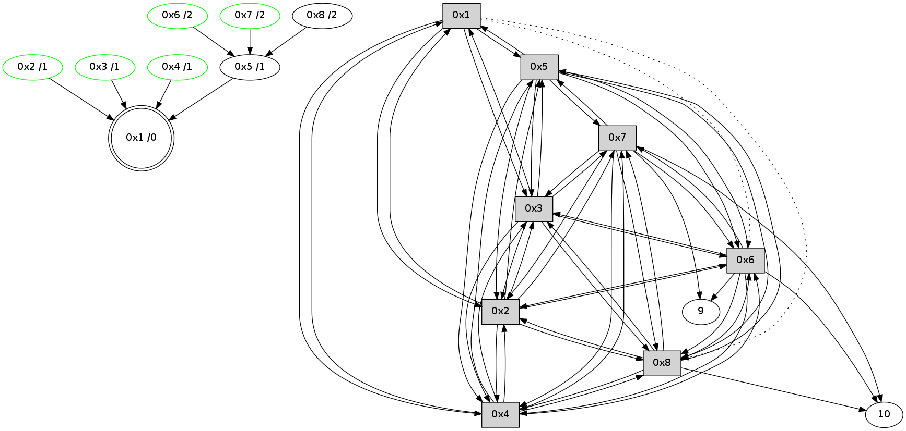

>> << IDX [start] -100 -25 -5 +0 +5 +25 +100 [350.055225849]
 Previous packets
----------------------------------------------------------------------
345.326407 beacon01(11f6) #0 coord=01,02,03,04,05,06,07,08,0a,09 cycle=688.0ms assoc
-- color-indic=0 64 13 d4
345.336564 beacon02(11f6) #0 coord=01,02,03,04,05,06,07,08,0a,09 cycle=688.0ms assoc 64 80 e5
345.346542 beacon03(11f6) #0 coord=01,02,03,04,05,06,07,08,0a,09 cycle=688.0ms assoc 64 fa a8
345.356541 beacon04(11f6) #0 coord=01,02,03,04,05,06,07,08,0a,09 cycle=688.0ms assoc 64 8d 42
345.366543 beacon05(11f6) #0 coord=01,02,03,04,05,06,07,08,0a,09 cycle=688.0ms assoc 64 f7 0f
345.376544 beacon06(11f6) #0 coord=01,02,03,04,05,06,07,08,0a,09 cycle=688.0ms assoc 64 79 d8
345.386543 beacon07(11f6) #0 coord=01,02,03,04,05,06,07,08,0a,09 cycle=688.0ms assoc 64 03 95
345.396547 beacon08(11f6) #0 coord=01,02,03,04,05,06,07,08,0a,09 cycle=688.0ms assoc 64 86 04
345.442507 [Hello(6): seq=166 sym=10,7,5,3,8,4,2,9 sysInfo= stat=10:13,0,3,1/7:5,0,6,1/5:7,0,7,0/3:4,0,7,3/8:14,0,5,0/4:8,0,5,3/2:12,0,7,2/9:9,0,5,1]
345.445195 [STC(6)->5-.->1 #0.7 stable,to-color d=2]
345.448096 [TreeStatus(6)-.->1 #0.7 stable child=1]
345.471721 [Hello(5): seq=166 sym=1,2,7,6,3,8,4 sysInfo= stat=1:6,0,7,0/2:11,0,7,3/7:0,0,6,1/6:10,0,6,3/3:15,0,7,3/8:14,0,5,0/4:0,0,6,2]
345.493090 [Hello(7): seq=166 sym=10,5,6,8,3,2,4,9 sysInfo= stat=10:13,0,4,1/5:6,0,7,0/6:2,0,6,3/8:1,0,5,0/3:9,0,7,3/2:11,0,7,2/4:6,0,5,2/9:1,0,5,1]
345.497720 [STC(7)->5-.->1 #0.7 stable,to-color d=2]
345.499353 [TreeStatus(7)-.->1 #0.7 stable child=2]
345.502277 [Hello(3): seq=166 sym=1,2,7,5,6,8,4 sysInfo= stat=1:6,0,7,0/2:12,0,7,3/7:14,0,6,1/5:14,0,6,0/6:8,0,7,3/8:14,0,5,0/4:15,0,6,3]
345.552085 [Hello(4): seq=166 sym=1,2,5,6,3,8,7 sysInfo= stat=1:5,0,7,0/2:12,0,7,3/5:0,0,7,0/6:8,0,7,3/3:2,0,6,2/8:15,0,5,0/7:3,0,7,2]
345.559505 [Hello(8): seq=166 sym=2,7,5,6,3,4,10 sysInfo= stat=2:13,0,7,3/7:7,0,7,2/5:5,0,6,0/6:2,0,6,3/3:1,0,7,3/4:13,0,5,3/10:6,0,3,1]
345.562077 [STC(8)->5-.->1 #0.7 to-color d=2]
345.573391 [Hello(2): seq=166 sym=1,7,5,3,8,4,6 sysInfo= stat=1:5,0,7,0/7:13,0,7,2/5:14,0,7,0/3:14,0,7,2/8:15,0,6,0/4:14,0,6,3/6:2,0,6,3]
----------------------------------------------------------------------
346.114544 beacon01(11f6) #0 coord=01,02,03,04,05,06,07,08,0a,09 cycle=688.0ms assoc
-- color-indic=0 64 af d1
346.124723 beacon02(11f6) #0 coord=01,02,03,04,05,06,07,08,0a,09 cycle=688.0ms assoc 64 3c e0
346.134679 beacon03(11f6) #0 coord=01,02,03,04,05,06,07,08,0a,09 cycle=688.0ms assoc 64 46 ad
346.144679 beacon04(11f6) #0 coord=01,02,03,04,05,06,07,08,0a,09 cycle=688.0ms assoc 64 31 47
346.154679 beacon05(11f6) #0 coord=01,02,03,04,05,06,07,08,0a,09 cycle=688.0ms assoc 64 4b 0a
346.164680 beacon06(11f6) #0 coord=01,02,03,04,05,06,07,08,0a,09 cycle=688.0ms assoc 64 c5 dd
346.174681 beacon07(11f6) #0 coord=01,02,03,04,05,06,07,08,0a,09 cycle=688.0ms assoc 64 bf 90
346.184685 beacon08(11f6) #0 coord=01,02,03,04,05,06,07,08,0a,09 cycle=688.0ms assoc 64 3a 01
346.310726 [Hello(1): seq=167 sym=5,3,2,4 asym=8,6 sysInfo= stat=5:14,0,7,0/3:2,0,7,3/2:12,0,7,3/4:0,0,6,3/8:1,0,6,0/6:13,0,6,3]
----------------------------------------------------------------------
346.902681 beacon01(11f6) #0 coord=01,02,03,04,05,06,07,08,0a,09 cycle=688.0ms assoc
-- color-indic=0 64 3b 08
346.912844 beacon02(11f6) #0 coord=01,02,03,04,05,06,07,08,0a,09 cycle=688.0ms assoc 64 a8 39
346.922816 beacon03(11f6) #0 coord=01,02,03,04,05,06,07,08,0a,09 cycle=688.0ms assoc 64 d2 74
346.932816 beacon04(11f6) #0 coord=01,02,03,04,05,06,07,08,0a,09 cycle=688.0ms assoc 64 a5 9e
346.942817 beacon05(11f6) #0 coord=01,02,03,04,05,06,07,08,0a,09 cycle=688.0ms assoc 64 df d3
346.952816 beacon06(11f6) #0 coord=01,02,03,04,05,06,07,08,0a,09 cycle=688.0ms assoc 64 51 04
346.962817 beacon07(11f6) #0 coord=01,02,03,04,05,06,07,08,0a,09 cycle=688.0ms assoc 64 2b 49
346.972820 beacon08(11f6) #0 coord=01,02,03,04,05,06,07,08,0a,09 cycle=688.0ms assoc 64 ae d8
347.022073 [Hello(3): seq=167 sym=1,2,7,5,6,8,4 sysInfo= stat=1:7,0,7,0/2:13,0,7,3/7:14,0,7,2/5:14,0,6,0/6:8,0,7,3/8:15,0,6,0/4:0,0,6,3]
347.061417 [Hello(7): seq=167 sym=10,5,6,8,3,2,4,9 sysInfo= stat=10:15,0,5,2/5:6,0,7,0/6:2,0,6,3/8:2,0,6,0/3:10,0,7,3/2:12,0,7,2/4:7,0,5,2/9:2,0,6,1]
347.078333 [Hello(8): seq=167 sym=2,7,5,6,3,4,10 sysInfo= stat=2:14,0,7,3/7:8,0,7,2/5:5,0,6,0/6:2,0,6,3/3:2,0,7,3/4:13,0,5,3/10:7,0,4,2]
347.124058 [Hello(4): seq=167 sym=1,2,5,6,3,8,7 sysInfo= stat=1:6,0,7,0/2:13,0,7,3/5:0,0,7,0/6:8,0,7,3/3:3,0,6,2/8:1,0,6,0/7:4,0,7,2]
347.126448 [Hello(5): seq=167 sym=1,2,7,6,3,8,4 sysInfo= stat=1:7,0,7,0/2:12,0,7,3/7:2,0,7,2/6:10,0,6,3/3:1,0,7,3/8:0,0,6,0/4:1,0,6,2]
347.130718 [Hello(6): seq=167 sym=10,7,5,3,8,4,2,9 sysInfo= stat=10:15,0,4,2/7:7,0,7,2/5:9,0,7,0/3:6,0,7,3/8:0,0,6,0/4:10,0,5,3/2:13,0,7,2/9:11,0,6,1]
347.148737 [Hello(2): seq=167 sym=1,7,5,3,8,4,6 sysInfo= stat=1:6,0,7,0/7:14,0,7,2/5:15,0,7,0/3:15,0,7,2/8:0,0,6,0/4:15,0,6,3/6:3,0,6,3]
----------------------------------------------------------------------
347.690816 beacon01(11f6) #0 coord=01,02,03,04,05,06,07,08,0a,09 cycle=688.0ms assoc
-- color-indic=0 64 87 0d
347.700991 beacon02(11f6) #0 coord=01,02,03,04,05,06,07,08,0a,09 cycle=688.0ms assoc 64 14 3c
347.710951 beacon03(11f6) #0 coord=01,02,03,04,05,06,07,08,0a,09 cycle=688.0ms assoc 64 6e 71
347.720950 beacon04(11f6) #0 coord=01,02,03,04,05,06,07,08,0a,09 cycle=688.0ms assoc 64 19 9b
347.730952 beacon05(11f6) #0 coord=01,02,03,04,05,06,07,08,0a,09 cycle=688.0ms assoc 64 63 d6
347.740952 beacon06(11f6) #0 coord=01,02,03,04,05,06,07,08,0a,09 cycle=688.0ms assoc 64 ed 01
347.750951 beacon07(11f6) #0 coord=01,02,03,04,05,06,07,08,0a,09 cycle=688.0ms assoc 64 97 4c
347.760955 beacon08(11f6) #0 coord=01,02,03,04,05,06,07,08,0a,09 cycle=688.0ms assoc 64 12 dd
347.864356 [Hello(1): seq=168 sym=5,3,2,4 asym=8,6 sysInfo= stat=5:15,0,7,0/3:3,0,7,3/2:13,0,7,3/4:1,0,6,3/8:2,0,6,0/6:14,0,6,3]
----------------------------------------------------------------------
348.478955 beacon01(11f6) #0 coord=01,02,03,04,05,06,07,08,0a,09 cycle=688.0ms assoc
-- color-indic=0 64 43 03
348.489121 beacon02(11f6) #0 coord=01,02,03,04,05,06,07,08,0a,09 cycle=688.0ms assoc 64 d0 32
348.499089 beacon03(11f6) #0 coord=01,02,03,04,05,06,07,08,0a,09 cycle=688.0ms assoc 64 aa 7f
348.509090 beacon04(11f6) #0 coord=01,02,03,04,05,06,07,08,0a,09 cycle=688.0ms assoc 64 dd 95
348.519092 beacon05(11f6) #0 coord=01,02,03,04,05,06,07,08,0a,09 cycle=688.0ms assoc 64 a7 d8
348.529090 beacon06(11f6) #0 coord=01,02,03,04,05,06,07,08,0a,09 cycle=688.0ms assoc 64 29 0f
348.539090 beacon07(11f6) #0 coord=01,02,03,04,05,06,07,08,0a,09 cycle=688.0ms assoc 64 53 42
348.549096 beacon08(11f6) #0 coord=01,02,03,04,05,06,07,08,0a,09 cycle=688.0ms assoc 64 d6 d3
348.583375 [Hello(8): seq=168 sym=2,7,5,6,3,4,10 sysInfo= stat=2:15,0,7,3/7:8,0,7,2/5:6,0,6,0/6:3,0,6,3/3:2,0,7,3/4:14,0,5,3/10:7,0,4,2]
348.625337 [Hello(4): seq=168 sym=1,2,5,6,3,8,7 sysInfo= stat=1:7,0,7,0/2:14,0,7,3/5:1,0,7,0/6:9,0,7,3/3:3,0,6,2/8:2,0,6,0/7:4,0,7,2]
348.643959 [Hello(7): seq=168 sym=10,5,6,8,3,2,4,9 sysInfo= stat=10:15,0,5,2/5:7,0,7,0/6:3,0,6,3/8:4,0,6,0/3:10,0,7,3/2:13,0,7,2/4:8,0,5,2/9:3,0,6,1]
348.647538 [Hello(6): seq=168 sym=10,7,5,3,8,4,2,9 sysInfo= stat=10:15,0,4,2/7:7,0,7,2/5:9,0,7,0/3:6,0,7,3/8:1,0,6,0/4:10,0,5,3/2:14,0,7,2/9:11,0,6,1]
348.665945 [STC(1) #0.8 to-color d=0]
348.673077 [Hello(2): seq=168 sym=1,7,5,3,8,4,6 sysInfo= stat=1:7,0,8,0/7:15,0,7,2/5:15,0,7,0/3:15,0,7,2/8:1,0,6,0/4:0,0,6,3/6:4,0,6,3]
348.677904 [STC(2)->1 #0.8 stable,to-color d=1]
348.679566 [TreeStatus(2)-.->1 #0.8 stable child=1]
348.693198 [Hello(5): seq=168 sym=1,2,7,6,3,8,4 sysInfo= stat=1:8,0,8,0/2:14,0,8,4/7:3,0,7,2/6:12,0,6,3/3:1,0,7,3/8:1,0,6,0/4:2,0,6,2]
348.696731 [STC(5)->1 #0.8 to-color d=1]
348.728467 [Hello(3): seq=168 sym=1,2,7,5,6,8,4 sysInfo= stat=1:8,0,8,0/2:15,0,8,4/7:0,0,7,2/5:0,0,7,0/6:10,0,7,3/8:1,0,6,0/4:2,0,6,3]
348.733279 [STC(3)->1 #0.8 stable,to-color d=1]
348.734942 [TreeStatus(3)-.->1 #0.8 stable child=1]
----------------------------------------------------------------------
349.267091 beacon01(11f6) #0 coord=01,02,03,04,05,06,07,08,0a,09 cycle=688.0ms assoc
-- color-indic=0 64 ff 06
349.277247 beacon02(11f6) #0 coord=01,02,03,04,05,06,07,08,0a,09 cycle=688.0ms assoc 64 6c 37
349.287226 beacon03(11f6) #0 coord=01,02,03,04,05,06,07,08,0a,09 cycle=688.0ms assoc 64 16 7a
349.297226 beacon04(11f6) #0 coord=01,02,03,04,05,06,07,08,0a,09 cycle=688.0ms assoc 64 61 90
349.307226 beacon05(11f6) #0 coord=01,02,03,04,05,06,07,08,0a,09 cycle=688.0ms assoc 64 1b dd
349.317227 beacon06(11f6) #0 coord=01,02,03,04,05,06,07,08,0a,09 cycle=688.0ms assoc 64 95 0a
349.327230 beacon07(11f6) #0 coord=01,02,03,04,05,06,07,08,0a,09 cycle=688.0ms assoc 64 ef 47
349.337321 beacon08(11f6) #0 coord=01,02,03,04,05,06,07,08,0a,09 cycle=688.0ms assoc 64 6a d6
349.429001 [Hello(1): seq=169 sym=5,3,2,4 asym=8,6 sysInfo= stat=5:0,0,8,0/3:4,0,8,4/2:14,0,8,4/4:2,0,6,3/8:3,0,6,0/6:15,0,6,3]
349.437953 [STC(8)->5-.->1 #0.8 to-color d=2]
349.468077 [STC(4)->1 #0.8 stable,to-color d=1]
349.469726 [TreeStatus(4)-.->1 #0.8 stable child=1]
349.472778 [TreeStatus(6)-.->1 #0.8 stable child=1]
349.475366 [STC(7)->5-.->1 #0.8 stable,to-color d=2]